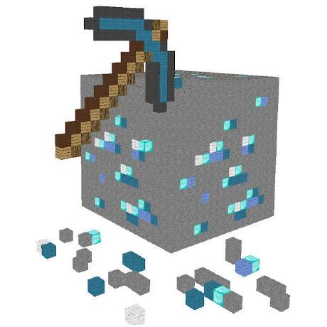

Go Back to Home
Pomelo Team Members and Notable Contributors
Stossy11

[Main/Lead Developer]
The magician responsible for this project!
TechGuy541
[Swift & Web Developer]
Developed this site initially, also a developer for Pomelo
CycloKid
[Web Developer & Graphic Designer]
Redesigned the website into what it is now and created several designs for Pomelo